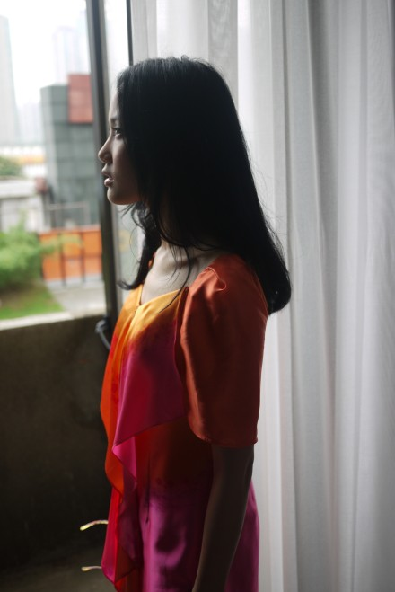
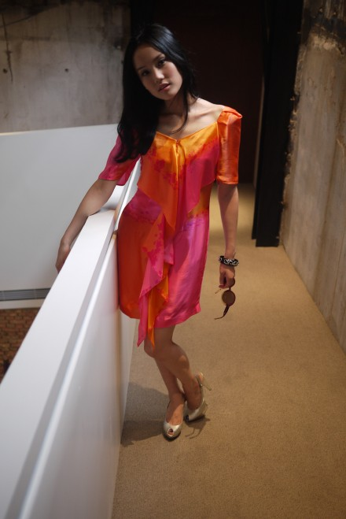
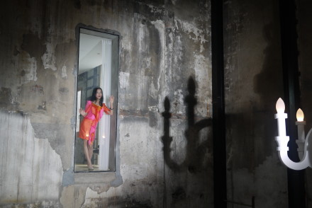
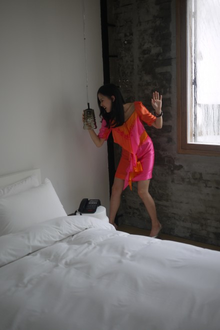
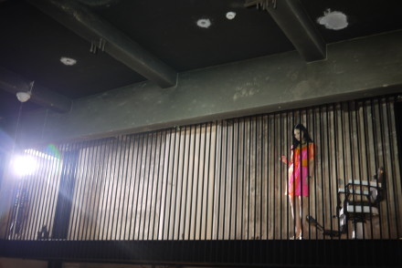
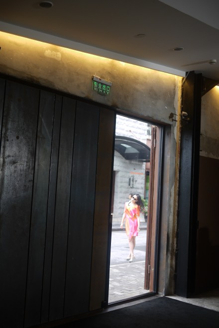
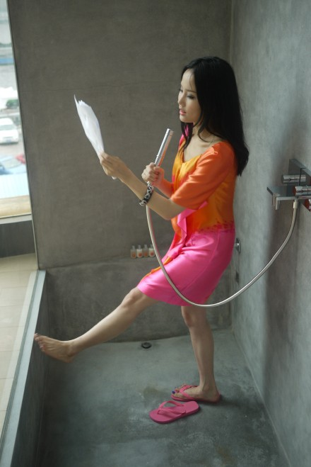

无数颗小红点已经蔓延到了膝盖，是过敏还是压力？越痒越抓越痒...
← 返回全部文章索引
回上海了，栋栋和胖胖毛长长了，外婆的痴呆症似乎有些好转，见到我时还是笑得像多花一样，爸爸继续健他的身，妈妈还是一如既往的用爱心绿豆汤迎接我，家人都好我就放心了。他们非常体贴我，到家那天没有问我有关于台北的任何事情，因为他们知道我懒得解释事情的过程，所以只要我说顺利他们就明白了...
去台北之前去走访了外滩老码头边的水摄精品酒店，将锅炉房改建成精明设计酒店的过程本来就不是一件容易的事情，看似放弃，缺在竭力坚持，可以感受到设计师为其倾注的感情，这个酒店让我想到07年在黄浦江边废弃的钢铁厂拍摄的《红眼睛》mv，也让我想起小时候住在老房子的顶楼，有老虎窗，每天都要倒马桶，吃喝拉都在同一间，兴奋的时候一跳碗橱还会跟着摇两下...






